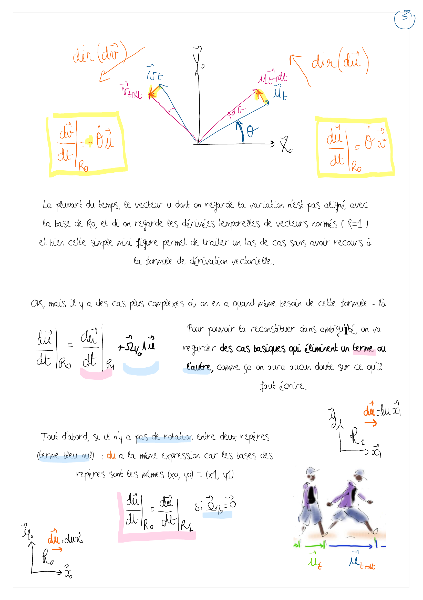
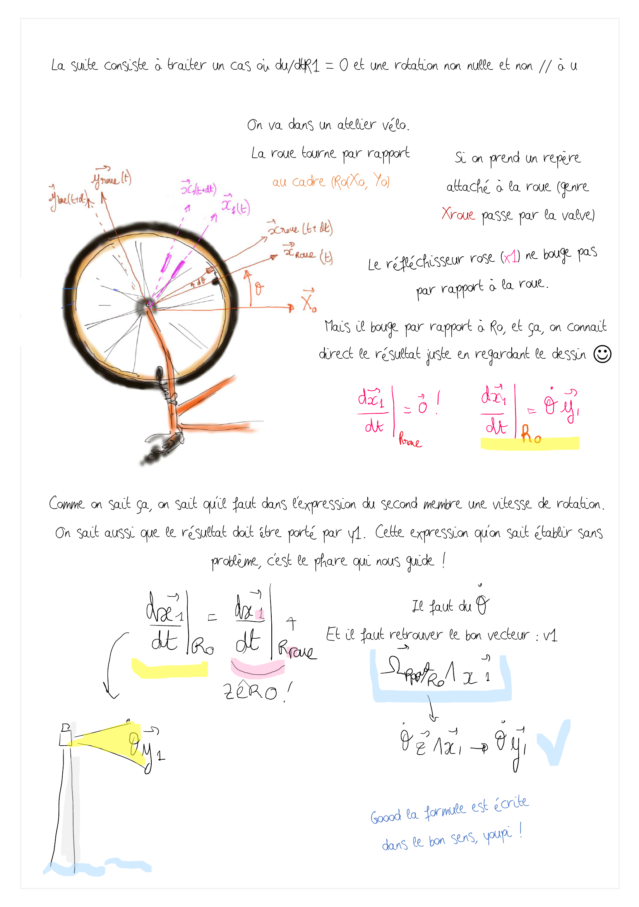
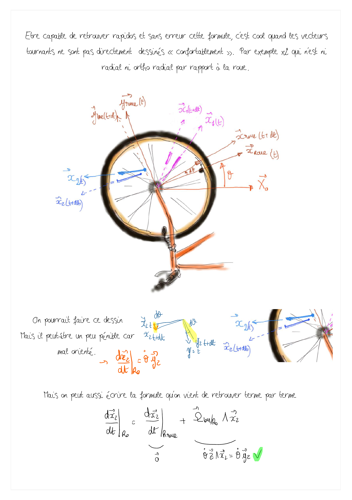

⚠️ VERSION DE TRAVAIL
Document en cours de développement à ne pas diffuser tel quel.
üí¨ Am√©liorons ensemble la proposition ! Surlignez du texte et cliquez sur "Annotate"
dv.3 - retrouver la formule vectorielle#
Objectif de cette fiche : en repartant d’un cas simple et maitrisé on peut retrouver les termes de la formule vectorielle en s’assurant qu’elle est juste

Surlignez ce texte pour commenter la page üëÜ -

Surlignez ce texte pour commenter la page üëÜ -

Surlignez ce texte pour commenter la page üëÜ -

Surlignez ce texte pour commenter la page üëÜ -

Surlignez ce texte pour commenter la page üëÜ -